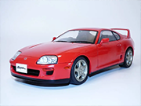

Toyota Supra MK4 98' - STAGE 3
La Toyota Supra MK4 de 1998, dans sa version Stage 3, incarne la quintessence de la puissance et de la technologie japonaises dans le domaine des voitures de sport. Elle allie performances extrêmes, design emblématique et technologies avancées pour offrir une expérience de conduite incomparable.
Équipée d'un moteur 2JZ-GTE 3.0 litres turbocompressé, la Supra Stage 3 délivre une puissance phénoménale. Associée à une boîte manuelle 6 vitesses, elle offre des performances dynamiques exceptionnelles tout en restant parfaitement contrôlable grâce à ses systèmes de gestion électronique avancés.
Le châssis sport et la suspension réglable garantissent une tenue de route précise, permettant des virages serrés et une agilité sans compromis. Les freins renforcés assurent un freinage puissant et constant, ajoutant une confiance supplémentaire à la conduite sportive.
L'intérieur de la Supra MK4 est un mélange de confort et de sportivité, avec des équipements modernes et un design ergonomique. Chaque détail est pensé pour offrir une expérience de conduite immersive et passionnante, à la hauteur de la réputation légendaire de la Supra.
La Toyota Supra MK4 98' Stage 3 demeure une icône parmi les passionnés de voitures de sport, alliant performance brute et élégance intemporelle dans un package technologique de pointe.
Spécificités techniques du véhicule
| Caractéristique | Valeur |
|---|---|
| Moteur | 2JZ-GTE 3.0 litres turbocompressé |
| Puissance | 330 chevaux |
| Couple | 441 Nm |
| Transmission | Boîte manuelle 6 vitesses |
| Accélération (0-100 km/h) | 4,6 secondes |
| Vitesse maximale | 250 km/h |
| Châssis | Sport renforcé |
| Suspension | Réglable sport |
| Freins | Disques ventilés, ABS |
| Pneus | Avant 225/50 R16, Arrière 245/45 R16 |
| Poids | 1450 kg |
| Consommation moyenne | 12 L/100km |